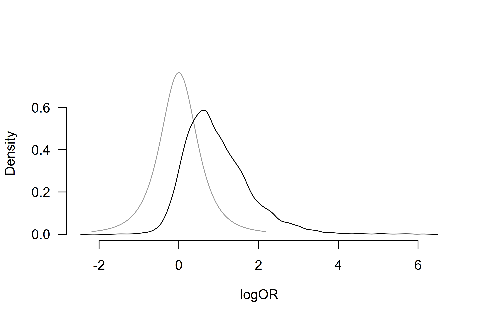

Informed Bayesian Model-Averaged Meta-Analysis with Binary Outcomes
František Bartoš
2025-09-10
Source:vignettes/MedicineBiBMA.Rmd
MedicineBiBMA.RmdBayesian model-averaged meta-analysis can be specified using the binomial likelihood and applied to data with dichotomous outcomes. This vignette illustrates how to do this with an example from Bartoš et al. (2023), who implemented a binomial-normal Bayesian model-averaged meta-analytic model and developed informed prior distributions for meta-analyses of binary and time-to-event outcomes based on the Cochrane database of systematic reviews (see Bartoš et al. (2021) for informed prior distributions for meta-analyses of continuous outcomes highlighted in Informed Bayesian Model-Averaged Meta-Analysis in Medicine vignette.
Binomial-Normal Bayesian Model-Averaged Meta-Analysis
We illustrate how to fit the binomial-normal Bayesian model-averaged
meta-analysis using the RoBMA R package. For this purpose,
we reproduce the example of adverse effects of honey in treating acute
cough in children from Bartoš et al.
(2023), who reanalyzed two studies with adverse events of
nervousness, insomnia, or hyperactivity in the honey vs. no treatment
condition that were subjected to a meta-analysis by Oduwole et al. (2018).
We load the RoBMA package and specify the number of adverse events and sample sizes in each arm as described on p. 73 (Oduwole et al., 2018).
library(RoBMA)
events_experimental <- c(5, 2)
events_control <- c(0, 0)
observations_experimental <- c(35, 40)
observations_control <- c(39, 40)
study_names <- c("Paul 2007", "Shadkam 2010")Notice that both studies reported no adverse events in the control group. Using a normal-normal meta-analytic model with log odds ratios would require a continuity correction, which might result in bias. Binomial-normal models allow us to circumvent the issue by modeling the observed proportions directly (see Bartoš et al. (2023) for more details).
First, we fit the binomial-normal Bayesian model-averaged
meta-analysis using informed prior distributions based on the
Acute Respiratory Infections subfield. We use the
BiBMA function and specify the observed events
(x1 and x2) and sample size (n1
and n2) of adverse events and sample sizes in each arm. We
use the prior_informed function to specify the informed
prior distributions for the individual medical subfields
automatically.
fit <- BiBMA(
x1 = events_experimental,
x2 = events_control,
n1 = observations_experimental,
n2 = observations_control,
study_names = study_names,
priors_effect = prior_informed("Acute Respiratory Infections", type = "logOR", parameter = "effect"),
priors_heterogeneity = prior_informed("Acute Respiratory Infections", type = "logOR", parameter = "heterogeneity"),
seed = 1
)with priors_effect and priors_heterogeneity
corresponding to the
and
prior distributions (see ?prior_informed for more details
regarding the informed prior distributions).
We obtain the output with the summary function. Adding
the conditional = TRUE argument allows us to inspect the
conditional estimates, i.e., the effect size estimate assuming that the
models specifying the presence of the effect are true, and the
heterogeneity estimates assuming that the models specifying the presence
of heterogeneity are true. We also set the
output_scale = "OR" argument to display the effect size
estimates on the odds ratio scale.
summary(fit, conditional = TRUE, output_scale = "OR")
#> Call:
#> BiBMA(x1 = events_experimental, x2 = events_control, n1 = observations_experimental,
#> n2 = observations_control, study_names = study_names, priors_effect = prior_informed("Acute Respiratory Infections",
#> type = "logOR", parameter = "effect"), priors_heterogeneity = prior_informed("Acute Respiratory Infections",
#> type = "logOR", parameter = "heterogeneity"), seed = 1)
#>
#> Bayesian model-averaged meta-analysis (binomial-normal model)
#> Components summary:
#> Models Prior prob. Post. prob. Inclusion BF
#> Effect 2/4 0.500 0.725 2.630
#> Heterogeneity 2/4 0.500 0.564 1.296
#>
#> Model-averaged estimates:
#> Mean Median 0.025 0.975
#> mu 3.389 1.642 0.842 15.143
#> tau 0.420 0.158 0.000 2.594
#> The effect size estimates are summarized on the OR scale and heterogeneity is summarized on the logOR scale (priors were specified on the log(OR) scale).
#>
#> Conditional estimates:
#> Mean Median 0.025 0.975
#> mu 4.242 2.261 0.781 17.613
#> tau 0.747 0.426 0.097 3.233
#> The effect size estimates are summarized on the OR scale and heterogeneity is summarized on the logOR scale (priors were specified on the log(OR) scale).The output from the summary.RoBMA() function has three
parts. The first part, under the ‘Robust Bayesian Meta-Analysis’ heading
provides a basic summary of the fitted models by component types
(presence of the Effect and Heterogeneity). The results show that the
inclusion Bayes factor for the effect corresponds to the one reported in
Bartoš et al. (2023),
and
(up to an MCMC error)—weak/undecided evidence for the presence of the
effect and heterogeneity.
The second part, under the ‘Model-averaged estimates’ heading displays the parameter estimates model-averaged across all specified models (i.e., including models specifying the effect size to be zero). These estimates are shrunk towards the null hypotheses of null effect or no heterogeneity in accordance with the posterior uncertainty about the presence of the effect or heterogeneity. We find the model-averaged mean effect OR = 3.39, 95% CI [0.84, 15.14], and a heterogeneity estimate , 95% CI [0.00, 2.59].
The third part, under the ‘Conditional estimates’ heading displays the conditional effect size and heterogeneity estimates (i.e., estimates assuming presence of the effect or heterogeneity) corresponding to the one reported in Bartoš et al. (2023), OR = 4.24, 95% CI [0.78, 17.61], and a heterogeneity estimate , 95% CI [0.10, 3.23].
We can also visualize the posterior distributions of the effect size
and heterogeneity parameters using the plot() function.
Here, we set the conditional = TRUE argument to display the
conditional effect size estimate and prior = TRUE to
include the prior distribution in the plot.
plot(fit, parameter = "mu", prior = TRUE, conditional = TRUE)
Additional visualizations and summaries are demonstrated in the Reproducing BMA and Informed Bayesian Model-Averaged Meta-Analysis in Medicine vignettes.